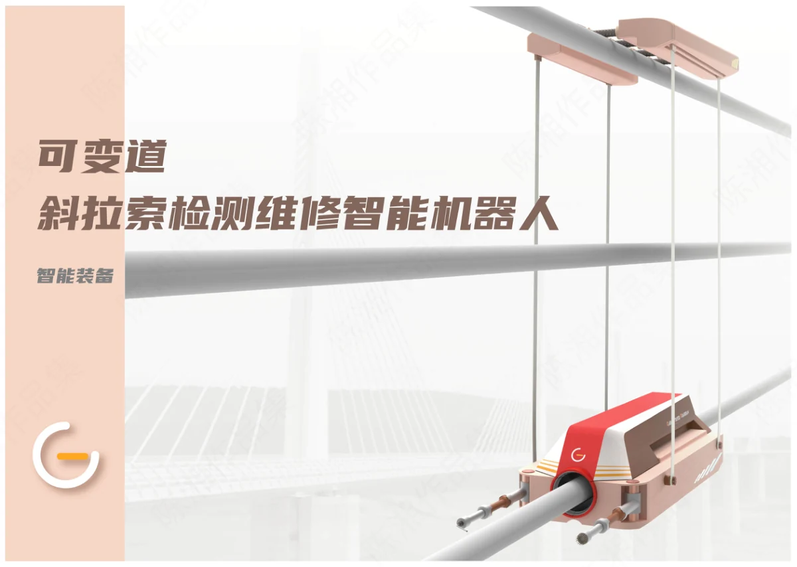
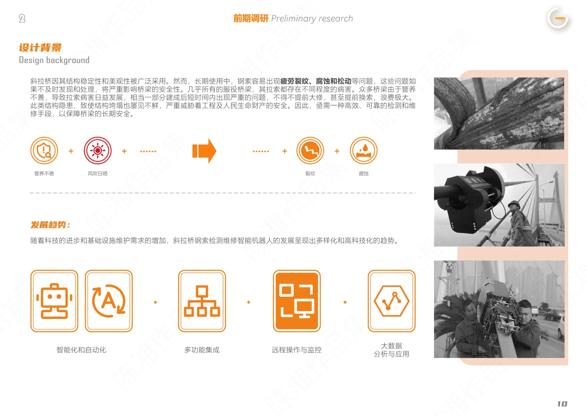
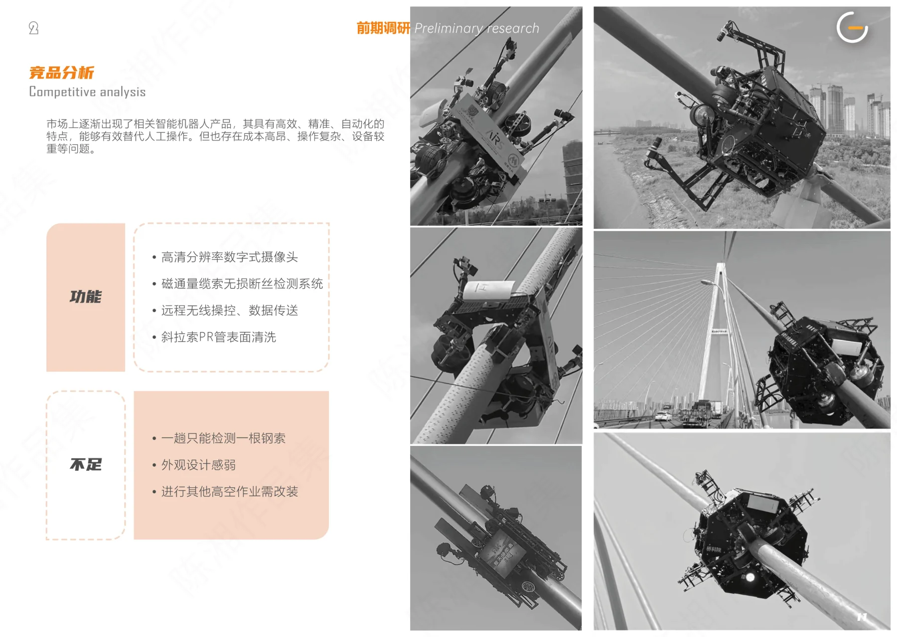
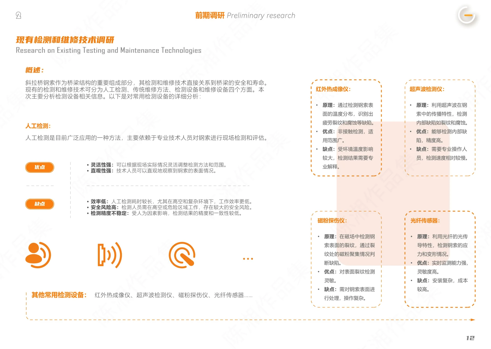
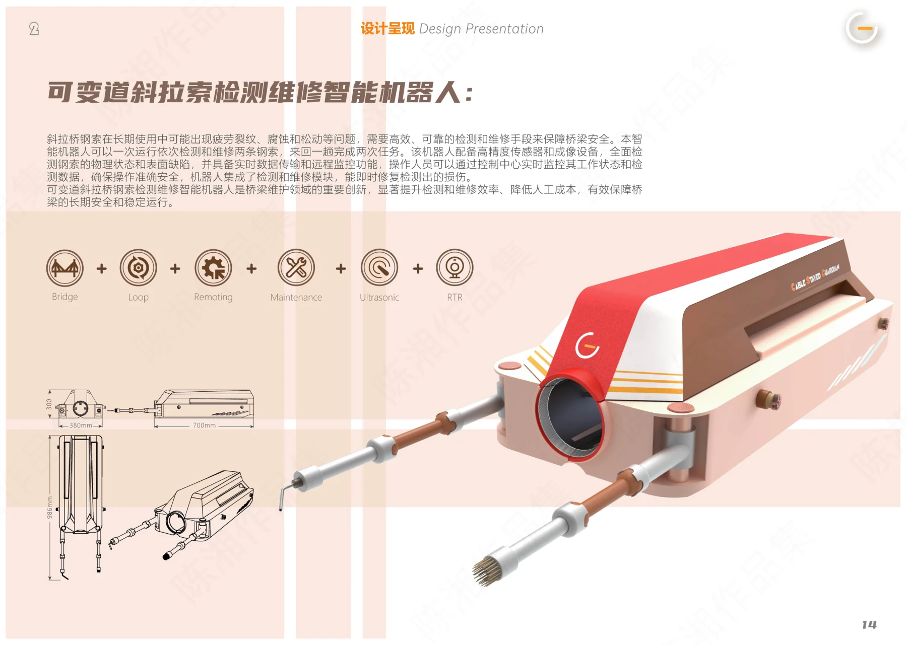
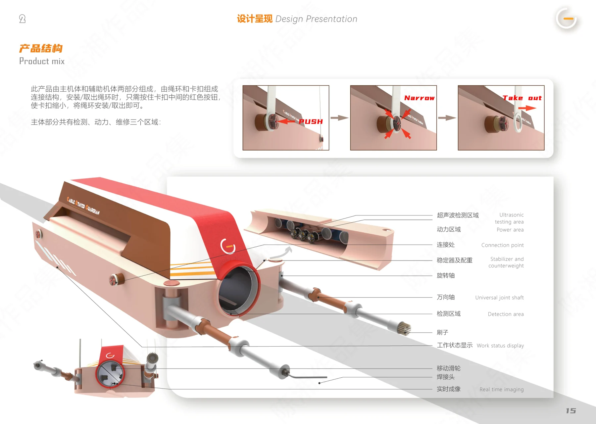
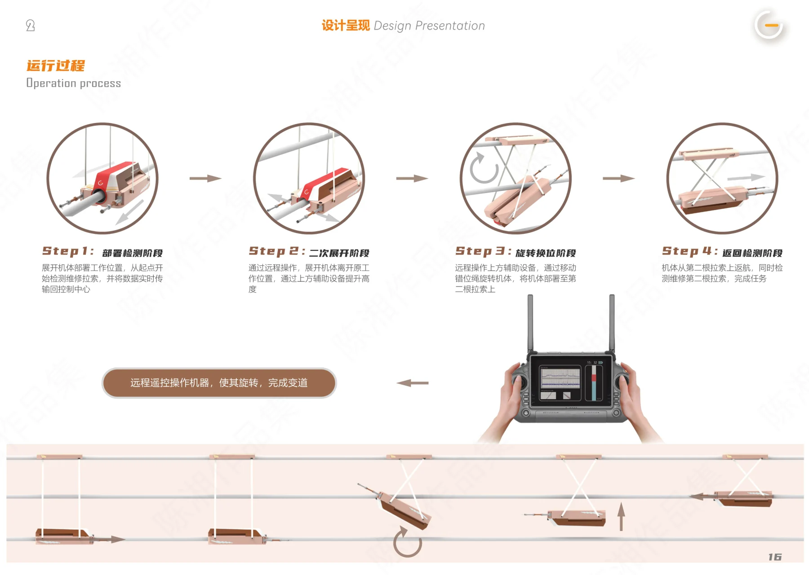
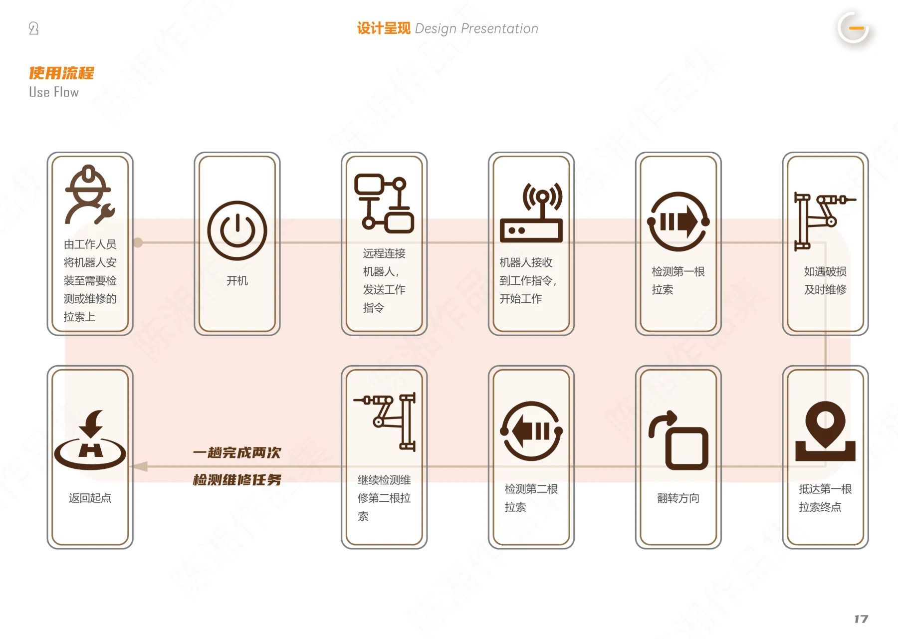

PROJECT 05 / CABLE INSPECTION ROBOT
可变道斜拉索检测维修机器人
面向桥梁斜拉索作业，探索可变道的检测与维修设备形态。

理解作业环境
项目围绕桥梁斜拉索检测与维修展开，整理行业背景、已有设备与竞品信息，关注高处作业和设备移动的使用场景。
从研究到结构方案
作品集包含相关技术研究、外观草图与结构推演，以可变道作业为设计方向组织机器人外观、部件和移动构想。
解释操作流程
通过结构分解、工作过程、遥控操作与使用流程展示方案，说明设备如何进入作业、移动和完成任务。功能与结构均按概念方案呈现，未声明工程验证或量产。
PROCESS / 设计过程与展板
CLICK TO VIEW FULL SIZE以下为作品集中记录的设计方案与过程。图片可点击放大查看，保留原稿内容与水印。








内容来源：《陈湘作品集-已压缩》第 11—19 页。未明确的项目时间、个人分工及落地结果未作推断。